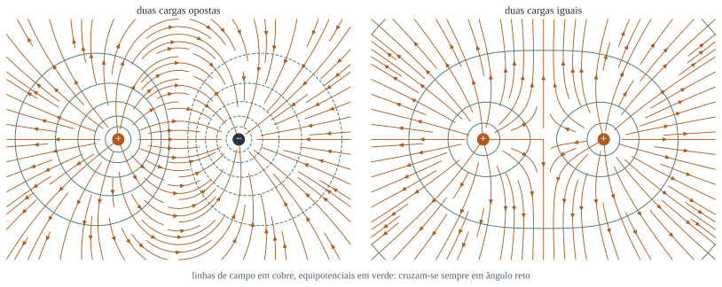

Esférica
Superfície: esfera concêntrica.
\[ E\left(4\pi r^2\right) = \frac{Q_{\text{int}}}{\varepsilon_0} \]Serve para cargas pontuais, esferas, cascas.
EM I · 9 encontros de duas horas
Da lei de Coulomb ao potencial, passando pela lei de Gauss nas formas integral e diferencial, pela energia do campo e pelos condutores.
A pergunta fundadora do curso é simples de enunciar: dado um conjunto de cargas paradas, qual é a força sobre uma carga de prova? Tudo o que vem depois, até as ondas eletromagnéticas do capítulo 9, é consequência da resposta e das suas generalizações.
A resposta experimental é a lei de Coulomb. Para duas cargas pontuais paradas,
\[ \boxed{\;\vet{F} = \frac{1}{4\pi\varepsilon_0}\,\frac{q_1q_2}{\imath^2}\, \vers{\imath},\;} \]onde \(\imath\) é a distância entre elas e \(\vers{\imath}\) aponta da carga que produz para a carga que sente. A constante vale
\[ \frac{1}{4\pi\varepsilon_0} = 8{,}99\times10^{9}\ \mathrm{N\,m^2/C^2},\qquad \varepsilon_0 = 8{,}85\times10^{-12}\ \mathrm{C^2/N\,m^2}. \]Três coisas na fórmula merecem atenção, porque nenhuma delas é óbvia.
O inverso do quadrado. O expoente é 2, e é 2 com precisão extraordinária. Experimentos no estilo do de Cavendish, medindo a ausência de campo dentro de uma casca condutora fechada, limitam o desvio a menos de \(10^{-16}\). Se o expoente fosse \(2+\epsilon\) com \(\epsilon\) não nulo, não haveria lei de Gauss, não haveria potencial com \(1/r\), e metade das ferramentas deste curso desapareceria.
A instantaneidade. A fórmula não contém o tempo. Ela vale para cargas paradas, e paradas há tempo suficiente; a correção para cargas que se movem é assunto do capítulo 10, e aí a informação viaja a \(c\).
A superposição. A força de várias cargas sobre uma é a soma vetorial das forças individuais, sem nenhum termo cruzado. Isso é um fato experimental, não uma necessidade lógica, e é o que torna o eletromagnetismo linear e, portanto, tratável.
Em vez de calcular a força sobre cada carga de prova possível, convém calcular uma vez só a grandeza que depende apenas das fontes:
\[ \vet{E}(\vet{r}) = \frac{1}{4\pi\varepsilon_0}\sum_i \frac{q_i}{\imath_i^2}\,\vers{\imath}_i, \qquad \vet{F} = q\vet{E}. \]A pergunta "o campo existe mesmo, ou é só um artifício de cálculo" tem resposta, e ela é não trivial: o campo existe, e o capítulo 8 vai mostrar que ele carrega energia e momento próprios. Por enquanto, basta tratá-lo como uma propriedade do espaço criada pelas fontes.
Carga de verdade vem em pedaços de \(1{,}6\times10^{-19}\ \mathrm{C}\), mas em qualquer problema macroscópico há tantos pedaços que convém tratá-la como contínua. Conforme a geometria,
\[ \vet{E} = \frac{1}{4\pi\varepsilon_0}\int\frac{\vers{\imath}}{\imath^2} \left\{\begin{array}{l} \lambda\,d\ell'\\ \sigma\,da'\\ \rho\,d\tau' \end{array}\right. \]O integrando é vetorial, e esse é o trabalho: resolver três integrais em vez de uma. Quando há simetria, as componentes transversais se cancelam aos pares e sobra uma integral escalar.
Exemplo trabalhado: o fio finito. Um bastão de comprimento \(2L\) tem carga \(Q\) uniformemente distribuída, \(\lambda = Q/2L\). Qual é o campo num ponto a uma distância \(z\) do centro, sobre a perpendicular mediana?
Ponha o bastão no eixo \(x\), de \(-L\) a \(L\), e o ponto em \((0,0,z)\). Um pedaço \(dx'\) em \(x'\) está a uma distância \(\imath = \sqrt{x'^2+z^2}\), e contribui com
\[ dE = \frac{1}{4\pi\varepsilon_0}\frac{\lambda\,dx'}{x'^2+z^2}. \]A componente horizontal de cada pedaço é cancelada pelo pedaço simétrico em \(-x'\), de modo que só sobra a componente vertical, que traz um fator \(\cos\alpha = z/\sqrt{x'^2+z^2}\):
\[ E_z = \frac{\lambda}{4\pi\varepsilon_0}\int_{-L}^{L} \frac{z\,dx'}{\left(x'^2+z^2\right)^{3/2}} = \frac{\lambda}{4\pi\varepsilon_0}\,\frac{2L}{z\sqrt{L^2+z^2}}, \]usando a primitiva \(\int dx/(x^2+z^2)^{3/2} = x/z^2\sqrt{x^2+z^2}\). Escrevendo em termos da carga total,
\[ \boxed{\;E_z = \frac{1}{4\pi\varepsilon_0}\, \frac{Q}{z\sqrt{L^2+z^2}}.\;} \]Os dois limites, que é onde se confere. Para \(z \gg L\), a raiz vira \(z\) e sobra \(E = Q/4\pi\varepsilon_0z^2\): de longe, o bastão é uma carga pontual, como tinha de ser. Para \(z \ll L\), a raiz vira \(L\) e sobra \(E = \lambda/2\pi\varepsilon_0 z\): de perto, o bastão é um fio infinito, e aparece o \(1/z\) característico. Um resultado que não passa nesses dois testes está errado, e vale sempre fazê-los antes de entregar a prova.
Calcular integrais vetoriais para toda distribuição é insustentável. A lei de Gauss é o atalho, e ela vale sempre, mas só é útil quando há simetria.
Comece pelo fluxo. Para uma carga pontual na origem, o fluxo através de uma esfera de raio \(r\) centrada nela é
\[ \oint \vet{E}\cdot d\vet{a} = \frac{q}{4\pi\varepsilon_0 r^2}\left(4\pi r^2\right) = \frac{q}{\varepsilon_0}, \]e o raio sumiu. Não é coincidência: o campo cai com \(1/r^2\) e a área cresce com \(r^2\). É o inverso do quadrado, e só ele, que faz isso funcionar.
Como o fluxo não depende do raio, ele também não depende da forma da superfície, desde que ela envolva a carga; e pela superposição, somando sobre todas as cargas,
\[ \boxed{\;\oint_S \vet{E}\cdot d\vet{a} = \frac{Q_{\text{int}}}{\varepsilon_0}.\;} \]Cargas de fora contribuem com fluxo nulo: o que entra por um lado sai pelo outro.
Aplicando o teorema da divergência ao lado esquerdo e escrevendo \(Q_{\text{int}} = \int\rho\,d\tau\),
\[ \int_V \left(\divg{\vet{E}}\right)d\tau = \int_V \frac{\rho}{\varepsilon_0}\,d\tau, \]e como o volume é arbitrário, os integrandos têm de ser iguais ponto a ponto:
\[ \boxed{\;\divg{\vet{E}} = \frac{\rho}{\varepsilon_0}.\;} \]Esta é a primeira equação de Maxwell. Repare no que ela diz: a carga é a fonte do campo elétrico, no sentido técnico da palavra fonte, que o capítulo 1 definiu. Onde há carga positiva, as linhas de campo nascem; onde há negativa, morrem.
Para uma carga pontual, \(\vet{E} = \frac{q}{4\pi\varepsilon_0} \frac{\vers{r}}{r^2}\) e o divergente é nulo em toda parte menos na origem. A identidade da seção 5 do capítulo 1 resolve:
\[ \divg{\vet{E}} = \frac{q}{4\pi\varepsilon_0}\,4\pi\delta^3(\vet{r}) = \frac{q\,\delta^3(\vet{r})}{\varepsilon_0} = \frac{\rho}{\varepsilon_0}, \]
com \(\rho = q\delta^3(\vet{r})\), que é a maneira correta de escrever a densidade de uma carga pontual. Sem a delta, a forma diferencial da lei de Gauss não valeria no único caso em que sabemos a resposta exata.
O procedimento é sempre o mesmo. Primeiro, descobrir a direção de \(\vet{E}\) por simetria; segundo, escolher uma superfície em que o módulo seja constante e a direção, conhecida; terceiro, contar a carga interna. Só três simetrias permitem isso:
Superfície: esfera concêntrica.
\[ E\left(4\pi r^2\right) = \frac{Q_{\text{int}}}{\varepsilon_0} \]Serve para cargas pontuais, esferas, cascas.
Superfície: cilindro coaxial de comprimento \(\ell\).
\[ E\left(2\pi s\ell\right) = \frac{Q_{\text{int}}}{\varepsilon_0} \]Serve para fios, cilindros, cabos.
Superfície: caixa atravessando o plano, de área \(A\).
\[ E\left(2A\right) = \frac{Q_{\text{int}}}{\varepsilon_0} \]Serve para planos, placas, camadas.
Exemplo trabalhado: a esfera que não é uniforme. Uma esfera de raio \(R\) tem densidade de carga que cresce com o raio, \(\rho(r) = \rho_0\,r/R\). Ache o campo dentro e fora, e a carga total.
A carga total, integrando com o jacobiano correto:
\[ Q = \int_0^{R}\rho_0\frac{r}{R}\left(4\pi r^2\,dr\right) = \frac{4\pi\rho_0}{R}\cdot\frac{R^4}{4} = \pi\rho_0R^3. \]Dentro (\(r \lt R\)), a carga interna à esfera gaussiana de raio \(r\) é \(\pi\rho_0r^4/R\), e
\[ E\left(4\pi r^2\right) = \frac{\pi\rho_0 r^4}{\varepsilon_0 R} \;\Longrightarrow\; E = \frac{\rho_0 r^2}{4\varepsilon_0 R}. \]Fora (\(r \gt R\)), a carga interna é toda a carga, e
\[ E = \frac{Q}{4\pi\varepsilon_0 r^2} = \frac{\rho_0R^3}{4\varepsilon_0 r^2}. \]Os dois resultados coincidem em \(r = R\), valendo \(\rho_0R/4\varepsilon_0\): o campo é contínuo ali, como tem de ser, porque não há carga superficial na fronteira.
Compare com a esfera uniforme, em que o campo interno cresce com \(r\). Aqui ele cresce com \(r^2\), porque há menos carga perto do centro. E repare que o campo externo é o mesmo de uma carga pontual \(Q\) na origem, seja qual for a distribuição radial: de fora, não se enxerga nada além do total.
O campo eletrostático tem uma segunda propriedade, tão importante quanto a primeira, e que não decorre dela: a sua circulação é nula.
\[ \oint \vet{E}\cdot d\vet{\ell} = 0 \qquad\Longleftrightarrow\qquad \boxed{\;\rot{\vet{E}} = 0.\;} \]Para ver isso no caso de uma carga pontual, calcule a integral de linha entre dois pontos. Com \(\vet{E}\) radial e \(d\vet{\ell}\) tendo componente radial \(dr\),
\[ \int_a^b \vet{E}\cdot d\vet{\ell} = \frac{q}{4\pi\varepsilon_0}\int_{r_a}^{r_b}\frac{dr}{r^2} = \frac{q}{4\pi\varepsilon_0}\left(\frac{1}{r_a}-\frac{1}{r_b}\right), \]que só depende das pontas. Pela superposição, o mesmo vale para qualquer conjunto de cargas paradas. Fechando o caminho, \(r_a = r_b\) e a integral zera.
Campo com rotacional nulo é gradiente de alguma coisa, como o capítulo 1 estabeleceu. Define-se
\[ V(\vet{r}) = -\int_{\mathcal{O}}^{\vet{r}} \vet{E}\cdot d\vet{\ell}, \qquad \vet{E} = -\nabla V, \]com \(\mathcal{O}\) um ponto de referência, em geral o infinito. O sinal negativo é convenção, escolhida para que o potencial decresça no sentido do campo e para que uma carga positiva "caia" para potenciais menores.
Três observações que evitam confusão:

Para distribuições,
\[ V(\vet{r}) = \frac{1}{4\pi\varepsilon_0}\int\frac{\rho(\vet{r}')}{\imath} \,d\tau', \]com \(\imath = |\vet{r}-\vet{r}'|\), e a referência no infinito.
Juntando \(\vet{E} = -\nabla V\) com \(\divg{\vet{E}} = \rho/\varepsilon_0\),
\[ \boxed{\;\nabla^2 V = -\frac{\rho}{\varepsilon_0}\;} \qquad\text{(Poisson)}, \]que nas regiões vazias de carga vira
\[ \nabla^2 V = 0 \qquad\text{(Laplace)}. \]Toda a eletrostática está contida nessas duas linhas mais as condições de contorno. O capítulo 3 é inteiramente dedicado a resolvê-las quando a carga não é dada de antemão.
Exemplo trabalhado: o anel, pelo potencial. Um anel de raio \(a\) tem carga \(Q\) uniformemente distribuída. Ache o potencial e o campo no eixo, a uma altura \(z\).
Todo ponto do anel está à mesma distância \(\imath = \sqrt{a^2+z^2}\) do ponto do eixo, de modo que a integral é trivial:
\[ V(z) = \frac{1}{4\pi\varepsilon_0}\frac{1}{\sqrt{a^2+z^2}} \int dq = \frac{Q}{4\pi\varepsilon_0\sqrt{a^2+z^2}}. \]O campo no eixo sai derivando, e aqui é preciso cuidado: a derivada só dá a componente \(z\), porque só temos \(V\) sobre o eixo. Felizmente, por simetria, é a única componente que existe ali:
\[ E_z = -\der{V}{z} = \frac{Q}{4\pi\varepsilon_0}\,\frac{z}{\left(a^2+z^2\right)^{3/2}}. \]Confira. Em \(z = 0\), no centro do anel, o campo é nulo por simetria, e a fórmula concorda. Para \(z \gg a\), sobra \(Q/4\pi\varepsilon_0z^2\), a carga pontual. E o campo tem um máximo em \(z = a/\sqrt{2}\), que se acha derivando outra vez: é a altura em que a contribuição vertical de cada pedaço é mais eficiente.
Compare o trabalho: pelo potencial, uma integral de uma função escalar constante; diretamente pelo campo, uma integral vetorial com cancelamento de componentes. Sempre que o ponto de observação tiver simetria, vá pelo potencial.
Montar uma distribuição de cargas custa trabalho, porque é preciso vencer a repulsão entre as que já estão lá. Esse trabalho fica guardado, e a pergunta é onde.
Para trazer uma carga \(q\) do infinito até um ponto onde o potencial das outras vale \(V\), o trabalho é
\[ W = qV. \]Montando uma coleção de cargas pontuais uma a uma e somando, cada par aparece duas vezes, de onde
\[ W = \frac{1}{2}\sum_i q_iV(\vet{r}_i) \;\longrightarrow\; W = \frac{1}{2}\int \rho V\,d\tau. \]O fator \(1/2\) é o preço de contar cada par duas vezes, e esquecê-lo é o erro mais comum da seção.
Troque \(\rho\) por \(\varepsilon_0\divg{\vet{E}}\) e integre por partes, como o capítulo 1 ensinou:
\[ W = \frac{\varepsilon_0}{2}\int V\left(\divg{\vet{E}}\right)d\tau = \frac{\varepsilon_0}{2}\left[-\int \vet{E}\cdot\left(\nabla V\right)d\tau + \oint V\vet{E}\cdot d\vet{a}\right]. \]Com \(\nabla V = -\vet{E}\) e levando a superfície ao infinito, onde \(V\vet{E}\) cai como \(1/r^3\) enquanto a área cresce como \(r^2\), o termo de fronteira morre e sobra
\[ \boxed{\;W = \frac{\varepsilon_0}{2}\int E^2\,d\tau, \qquad u_E = \frac{\varepsilon_0E^2}{2}.\;} \]As duas expressões dão o mesmo número, mas contam histórias diferentes: a primeira diz que a energia está nas cargas, a segunda, que está no campo. A segunda é a certa, e o capítulo 8 vai mostrar por quê, quando a energia precisar viajar.
Exemplo trabalhado: a energia de uma esfera carregada. Uma esfera isolante de raio \(R\) tem carga \(Q\) uniformemente distribuída no volume. Quanta energia custa montá-la?
Pela lei de Gauss, o campo é
\[ E = \frac{Q r}{4\pi\varepsilon_0R^3}\;(r \lt R), \qquad E = \frac{Q}{4\pi\varepsilon_0r^2}\;(r \gt R). \]Integrando a densidade de energia nas duas regiões, com \(d\tau = 4\pi r^2dr\):
\[ W_{\text{dentro}} = \frac{\varepsilon_0}{2} \int_0^{R}\left(\frac{Qr}{4\pi\varepsilon_0R^3}\right)^2 4\pi r^2dr = \frac{Q^2}{8\pi\varepsilon_0R^6}\cdot\frac{R^5}{5} = \frac{Q^2}{40\pi\varepsilon_0R}, \] \[ W_{\text{fora}} = \frac{\varepsilon_0}{2} \int_R^{\infty}\left(\frac{Q}{4\pi\varepsilon_0r^2}\right)^2 4\pi r^2dr = \frac{Q^2}{8\pi\varepsilon_0R}. \]Somando, com \(1/40 + 5/40 = 6/40 = 3/20\),
\[ \boxed{\;W = \frac{3}{5}\,\frac{Q^2}{4\pi\varepsilon_0 R}.\;} \]Números. Para \(Q = 1{,}0\ \mu\mathrm{C}\) e \(R = 5{,}0\ \mathrm{cm}\), isso dá \(W = 0{,}6\times8{,}99\times10^{9}\times 10^{-12}/0{,}05 = 0{,}108\ \mathrm{J}\). Pouco mais de um décimo de joule, o que já é bastante: é o que custa separar um microcoulomb, e é por isso que eletrostática de bancada trabalha com nanocoulombs.
E a carga pontual? Fazendo \(R \to 0\) a energia diverge. Uma carga pontual tem energia de campo infinita, e isso não é um defeito da conta: é um problema de verdade, que a eletrodinâmica clássica não resolve e a quântica só contorna, com renormalização. Vale saber que ele está lá.
Condutor é um material com cargas livres para se mover. Essa única hipótese, levada às últimas consequências em equilíbrio, produz cinco resultados que valem para qualquer condutor, de qualquer forma.
Se houvesse campo, as cargas livres se moveriam, e não haveria equilíbrio. O campo externo é cancelado pelo rearranjo da carga.
Consequência de \(\divg{\vet{E}} = \rho/\varepsilon_0\) com \(\vet{E}=0\): a carga toda vai para a superfície.
Com \(\vet{E} = -\nabla V = 0\), o potencial não varia: o condutor inteiro é uma equipotencial.
Componente tangencial moveria carga ao longo da superfície. Logo o campo sai perpendicular.
Da condição de contorno, com campo nulo de um lado: o campo logo fora vale a densidade superficial dividida por \(\varepsilon_0\).
O quinto resultado merece uma observação, porque colide com o do plano infinito, que dá \(\sigma/2\varepsilon_0\). Não há contradição: no plano isolado, metade do campo vai para cada lado; na superfície do condutor, todo o campo vai para fora, porque dentro ele é nulo. A mesma carga superficial, duas situações diferentes.
A superfície de um condutor carregado é puxada para fora. Cada pedaço de carga \(\sigma\,da\) sente o campo das outras cargas, que é a média entre o campo de dentro (zero) e o de fora (\(\sigma/\varepsilon_0\)), ou seja \(\sigma/2\varepsilon_0\). Logo
\[ P = \frac{\sigma^2}{2\varepsilon_0} = \frac{\varepsilon_0E^2}{2} = u_E. \]A pressão é numericamente igual à densidade de energia do campo logo fora, e isso não é coincidência: é o começo do tensor de tensões de Maxwell, do capítulo 8.
Exemplo trabalhado: a carga induzida numa cavidade. Um bloco condutor neutro tem uma cavidade esférica no interior, e dentro da cavidade, sem tocar as paredes, está uma carga pontual \(q = +3{,}0\ \mathrm{nC}\). O que há na parede da cavidade, na superfície externa do bloco, e qual o campo fora?
Na parede da cavidade. Tome uma superfície gaussiana inteiramente dentro do metal, envolvendo a cavidade. Como \(\vet{E} = 0\) em todo ponto dela, o fluxo é nulo, e portanto a carga interna é nula. Já que \(q = +3{,}0\) nC está lá dentro, a parede tem de ter \(-3{,}0\ \mathrm{nC}\).
Na superfície externa. O bloco é neutro no total; se \(-3{,}0\) nC foram para a parede da cavidade, sobram \(+3{,}0\) nC, que vão para a superfície externa, porque dentro do metal não pode haver carga.
O campo fora. Aqui está o ponto bonito: a carga externa se distribui como se a cavidade e a carga de dentro não existissem. Se o bloco for esférico de raio \(b\), o campo fora é
\[ E = \frac{q}{4\pi\varepsilon_0 r^2}, \]exatamente como o de uma carga pontual no centro, mesmo que \(q\) esteja descentrada dentro da cavidade. O metal apaga toda a informação sobre onde a carga está. Essa é a blindagem eletrostática, e é por isso que o interior de um carro é um lugar razoável para estar durante uma tempestade.
E o contrário? Uma carga fora do bloco não produz campo nenhum dentro da cavidade, pelo mesmo mecanismo. A gaiola de Faraday funciona nos dois sentidos, mas por razões ligeiramente diferentes: a de fora para dentro é um resultado de unicidade do capítulo 3.
Dois programas, no padrão dos outros capítulos. Eles atacam justamente os dois pontos em que a conta no papel é mais trabalhosa: a integral vetorial de uma distribuição qualquer e a verificação da lei de Gauss em superfícies que não têm simetria.
Integra numericamente \(\vet{E}\) e \(V\) de uma distribuição discretizada em pedaços, para fio, anel e disco, e compara com as fórmulas fechadas.
Confira assim: o erro tem de cair como o quadrado do número de pedaços; os limites de longe (carga pontual) e de perto (fio infinito, plano infinito) têm de aparecer sozinhos; e \(-dV/dz\) numérico tem de reproduzir \(E_z\).
Calcula o fluxo de uma carga pontual por superfícies fechadas de formas diferentes, com a carga dentro e fora, inclusive superfícies deformadas sem simetria nenhuma.
Confira assim: o fluxo tem de dar \(q/\varepsilon_0\) sempre que a carga estiver dentro, seja qual for a forma, e exatamente zero quando estiver fora.
Os enunciados são nossos, e as soluções estão aqui mesmo, recolhidas. Resolva antes de abrir: ler solução pronta dá a sensação de ter entendido, que é diferente de ter entendido.
Um disco de raio \(a\) tem carga \(Q\) uniformemente distribuída na face, \(\sigma = Q/\pi a^2\). Calcule o campo num ponto do eixo a uma altura \(z\), integrando em anéis, e obtenha os dois limites: \(z \gg a\) e \(z \ll a\).
Um anel de raio \(s\) e espessura \(ds\) tem carga \(dq = \sigma\,2\pi s\,ds\) e, pelo resultado do exemplo do anel, contribui no eixo com
\[ dE_z = \frac{1}{4\pi\varepsilon_0} \frac{z\,dq}{\left(s^2+z^2\right)^{3/2}}. \]
Integrando de \(0\) a \(a\), com \(u = s^2+z^2\),
\[ E_z = \frac{\sigma z}{2\varepsilon_0}\int_0^a \frac{s\,ds}{\left(s^2+z^2\right)^{3/2}} = \frac{\sigma}{2\varepsilon_0} \left[1 - \frac{z}{\sqrt{a^2+z^2}}\right]. \]
Longe (\(z \gg a\)): expandindo a raiz, \(z/\sqrt{a^2+z^2} \approx 1 - a^2/2z^2\), e sobra
\[ E_z \approx \frac{\sigma a^2}{4\varepsilon_0 z^2} = \frac{Q}{4\pi\varepsilon_0 z^2}, \]
a carga pontual, como tinha de ser.
Perto (\(z \ll a\)): o segundo termo tende a zero e sobra \(E_z = \sigma/2\varepsilon_0\), o plano infinito, independente da distância. Note que o campo não tende a infinito ao encostar no disco: ele tende a um valor finito, e é esse valor que aparece na condição de contorno de uma superfície carregada.
Uma esfera de raio \(R\) tem carga uniforme de densidade \(\rho\), mas dentro dela há uma cavidade esférica vazia, de raio \(b\), cujo centro está deslocado de \(\vet{d}\) em relação ao centro da esfera grande. Mostre que o campo dentro da cavidade é uniforme e vale \(\rho\vet{d}/3\varepsilon_0\).
O truque é a superposição: a peça furada é a soma de uma esfera cheia de densidade \(+\rho\) com uma esfera pequena de densidade \(-\rho\) ocupando exatamente a cavidade.
Para uma esfera uniforme, a lei de Gauss dá, num ponto interno a uma distância \(\vet{r}\) do seu centro,
\[ \vet{E} = \frac{\rho\,\vet{r}}{3\varepsilon_0}. \]
Num ponto dentro da cavidade, chame de \(\vet{r}_+\) o vetor desde o centro da esfera grande e de \(\vet{r}_-\) o vetor desde o centro da cavidade. Então
\[ \vet{E} = \frac{\rho\vet{r}_+}{3\varepsilon_0} - \frac{\rho\vet{r}_-}{3\varepsilon_0} = \frac{\rho}{3\varepsilon_0}\left(\vet{r}_+-\vet{r}_-\right) = \frac{\rho\,\vet{d}}{3\varepsilon_0}, \]
porque \(\vet{r}_+ - \vet{r}_- = \vet{d}\) para qualquer ponto da cavidade.
O que isso tem de notável. O campo não depende do ponto: é rigorosamente uniforme dentro da cavidade, aponta sempre ao longo de \(\vet{d}\), e não depende nem do raio \(b\) da cavidade nem do raio \(R\) da esfera. Se a cavidade for concêntrica (\(\vet{d} = 0\)), o campo é nulo, que é o resultado conhecido da casca.
Um cilindro longo de raio \(a\) tem densidade de carga \(\rho(s) = \rho_0\,s/a\). Ache o campo dentro e fora, e a carga por unidade de comprimento.
A carga por unidade de comprimento é
\[ \lambda = \int_0^a \rho_0\frac{s}{a}\,(2\pi s\,ds) = \frac{2\pi\rho_0}{a}\cdot\frac{a^3}{3} = \frac{2\pi\rho_0a^2}{3}. \]
Dentro (\(s \lt a\)), a carga enlaçada por unidade de comprimento é \(2\pi\rho_0s^3/3a\), e a superfície gaussiana cilíndrica dá
\[ E\,(2\pi s) = \frac{2\pi\rho_0 s^3}{3a\varepsilon_0} \;\Longrightarrow\; E = \frac{\rho_0 s^2}{3a\varepsilon_0}. \]
Fora (\(s \gt a\)),
\[ E = \frac{\lambda}{2\pi\varepsilon_0 s} = \frac{\rho_0a^2}{3\varepsilon_0 s}. \]
Em \(s = a\) as duas dão \(\rho_0a/3\varepsilon_0\): contínuo, porque não há carga superficial. Compare com o fio uniforme, em que o campo interno cresce linearmente: aqui ele cresce com \(s^2\).
Duas cargas \(+q\) e \(-q\) estão separadas por uma distância \(d\) ao longo do eixo \(z\), com o centro na origem. Calcule o potencial exato num ponto \((r,\theta)\) e mostre que, para \(r \gg d\), ele tende a \(V = \dfrac{qd\cos\theta}{4\pi\varepsilon_0r^2}\). Em seguida explique por que seria errado dizer que o campo do dipolo cai com \(1/r^2\).
As distâncias às duas cargas são
\[ \imath_\pm = \sqrt{r^2 \mp r d\cos\theta + d^2/4}, \]
e o potencial exato é a soma
\[ V = \frac{q}{4\pi\varepsilon_0} \left(\frac{1}{\imath_+}-\frac{1}{\imath_-}\right). \]
Para \(r \gg d\), escreva \(\imath_\pm \approx r\left(1 \mp \frac{d\cos\theta}{2r}\right)\) e use \((1+x)^{-1} \approx 1-x\):
\[ \frac{1}{\imath_\pm} \approx \frac{1}{r} \left(1 \pm \frac{d\cos\theta}{2r}\right), \]
de modo que a diferença deixa só o termo cruzado:
\[ V \approx \frac{q}{4\pi\varepsilon_0}\,\frac{d\cos\theta}{r^2} = \frac{p\cos\theta}{4\pi\varepsilon_0 r^2},\qquad p = qd. \]
O erro a evitar. O potencial do dipolo cai com \(1/r^2\); o campo cai com \(1/r^3\), porque é o gradiente dele. Dizer que o campo do dipolo vai com \(1/r^2\) é confundir as duas grandezas, e é o erro mais comum do capítulo. Em geral, cada ordem de multipolo tem potencial \(\sim 1/r^{n+1}\) e campo \(\sim 1/r^{n+2}\).
Compare a energia necessária para carregar com \(Q\) uma esfera condutora de raio \(R\) (carga toda na superfície) com a de uma esfera isolante do mesmo raio com a carga espalhada uniformemente no volume. Calcule a razão e diga qual custa mais.
Condutora. A carga está toda na superfície, de modo que o campo é nulo dentro e vale \(Q/4\pi\varepsilon_0r^2\) fora. Só a região externa contribui:
\[ W_{\text{cond}} = \frac{\varepsilon_0}{2}\int_R^\infty \left(\frac{Q}{4\pi\varepsilon_0r^2}\right)^2 4\pi r^2dr = \frac{Q^2}{8\pi\varepsilon_0R} = \frac{1}{2}\,\frac{Q^2}{4\pi\varepsilon_0R}. \]
Isolante uniforme. É o exemplo resolvido do texto:
\[ W_{\text{isol}} = \frac{3}{5}\,\frac{Q^2}{4\pi\varepsilon_0R}. \]
A razão é \( \frac{3/5}{1/2} = \frac{6}{5} = 1{,}2\): a esfera isolante custa 20 % a mais.
Por quê. Na condutora, a carga se arranja sozinha do jeito mais barato possível, que é o mais espalhado: toda na superfície, o mais longe que der uma da outra. Forçá-la a ficar no volume, como no isolante, significa empilhar carga perto do centro, onde o potencial das outras é maior. O condutor minimiza a energia por conta própria, e esse é um caso particular do princípio de Thomson.
Uma esfera condutora de raio \(a\) com carga \(+Q\) está no centro de uma casca condutora neutra de raios \(b\) e \(c\) (\(a \lt b \lt c\)). Ache a carga em cada uma das três superfícies, o campo nas quatro regiões e o potencial da esfera interna, com referência no infinito.
As cargas. Na esfera, \(+Q\) na superfície \(r=a\). Dentro do metal da casca o campo é nulo, logo uma gaussiana entre \(b\) e \(c\) não enlaça carga: a superfície \(r=b\) tem \(-Q\). Como a casca é neutra, a superfície \(r=c\) fica com \(+Q\).
O campo.
\[ E = 0 \ (r\lt a);\quad E = \frac{Q}{4\pi\varepsilon_0r^2}\ (a\lt r\lt b);\quad E = 0 \ (b\lt r\lt c);\quad E = \frac{Q}{4\pi\varepsilon_0r^2}\ (r\gt c). \]
O potencial da esfera, integrando \(-\int\vet{E}\cdot d\vet{\ell}\) desde o infinito e pulando as regiões de campo nulo:
\[ V(a) = \frac{Q}{4\pi\varepsilon_0} \left[\frac{1}{c} + \frac{1}{a} - \frac{1}{b}\right]. \]
Leitura. O termo \(1/c\) vem de trazer a carga do infinito até a casca; a região entre \(b\) e \(c\) não contribui, porque lá o campo é nulo; e \(1/a - 1/b\) é o trecho entre a esfera e a casca. Se a casca for aterrada, a carga de \(r=c\) escoa, o termo \(1/c\) some e o potencial da esfera cai para \(\frac{Q}{4\pi\varepsilon_0}(1/a - 1/b)\).